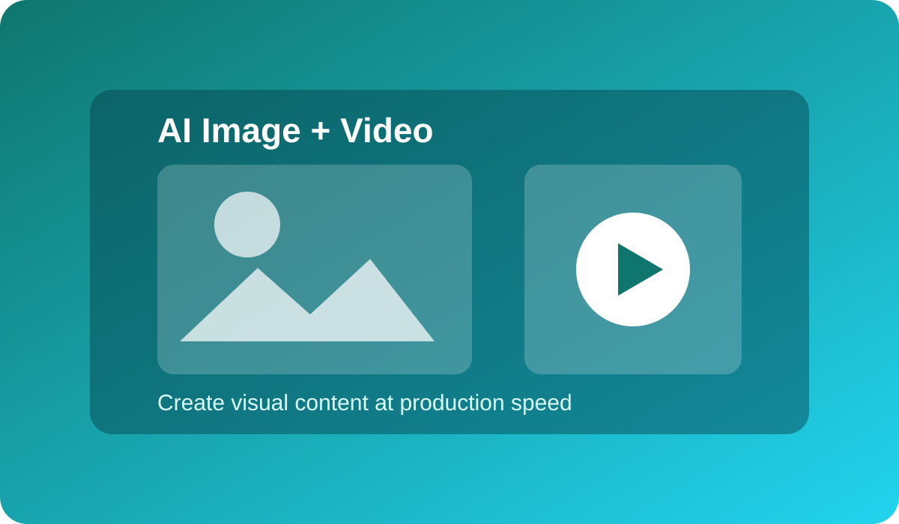

Image Prompting System
Build layered prompts for style, composition, and consistency in generated image outputs.
Live Webinar Class
Build fast content pipelines for social posts, ads, explainer visuals, and short-form videos.

Build layered prompts for style, composition, and consistency in generated image outputs.
Translate static concepts into short-form video sequences with scene planning and flow design.
Ideal for content creators, social media teams, solo founders, and ad professionals. You will complete the webinar with a repeatable workflow to create visual assets faster while keeping quality high.